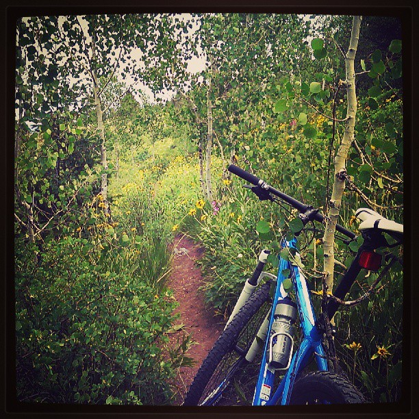

I'm Elliot. Yep, that's me up there, standing atop an abandoned Cold War era Nuclear Atlas Missile Coffin in Wyoming. Why the hell am I up there, you ask? We'll get to that.
I'm a Colorado native, attending The University of Colorado State University.
I'm a CS major chasing down a TAM minor. I've been
programming since ,
and am currently working full-time for a Boulder startup. I enjoy trying new things, and fucking love
exploring abandoned places1.
I have a very diverse set of interests. The primary of which is probably software development. Other than coding,
I can often be found carving up winding mountain trails on my 29er
, climbing and hiking in the mountains, and off-roading in my '95 Chevy Blazer.

My trusty Steed, spotted atop Jacskon Hole Ski Resort